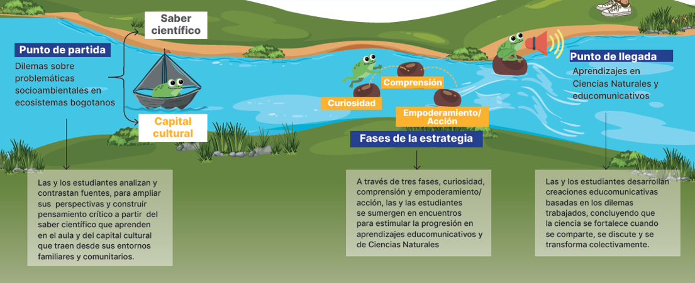

En el marco del convenio entre la Secretaría de Educación de Bogotá y la Universidad EAFIT, se desarrolla la estrategia pedagógica Comunicación Pública de la Ciencia (CPC), la cual tiene como propósito fortalecer el uso comprensivo del conocimiento científico en niñas, niños y adolescentes fuera del aula, mediante experiencias que articulan la ciencia con la vida cotidiana, el territorio y las problemáticas ambientales de la ciudad.
Metodológicamente, la estrategia adopta un enfoque basado en la resolución de dilemas contextualizados. Desde esta perspectiva, las y los estudiantes se enfrentan a situaciones complejas, abiertas y vinculadas con ecosistemas y problemáticas socioambientales de Bogotá, que requieren interpretar información, contrastar perspectivas, argumentar posiciones y tomar decisiones fundamentadas.
Los dilemas abordados integran dimensiones científicas, sociales, éticas y culturales, favoreciendo formas de pensamiento crítico y situado.
En esta estrategia se implementan los aprendizajes priorizados en Ciencias Naturales y Educación Ambiental, pero con enfoques educomunicativos que promueven el análisis, diseño y circulación de contenidos en distintos lenguajes y formatos.
La estrategia de Comunicación Pública de la Ciencia (CPC) invita a las comunidades educativas a reconocer la ciencia como parte de su vida cotidiana y a descubrir su capacidad para participar activamente en ella. A través de las fases de Curiosidad, Ciencia Cotidiana y Creación, fortalece competencias relacionadas con el pensamiento crítico, la argumentación, la creatividad, el uso comprensivo del conocimiento científico y el agenciamiento individual y colectivo frente a los desafíos de sus contextos. Su propósito es ampliar las oportunidades de acercamiento a la ciencia, fortalecer el capital científico de las y los estudiantes y promover la construcción de narrativas que articulen conocimiento, experiencias, preguntas e intereses de las comunidades educativas y sus territorios.
En este marco, la producción de narrativas y productos educomunicativos se entiende como una manera de fortalecer la relación de las y los estudiantes con la ciencia, reconociéndola como parte de la vida cotidiana y como herramienta para comprender, interpretar y participar en discusiones públicas sobre asuntos ambientales, tecnológicos y sociales.
Los productos creados hacen parte de un universo transmedia construido colectivamente por las y los estudiantes. A través de contenidos en formatos sonoros, gráficos y audiovisuales, las narrativas se conectan entre sí mediante los ecosistemas, dilemas y problemáticas abordadas, permitiendo explorar múltiples perspectivas y formas de comunicar la ciencia desde el territorio.

Activación del interés de los y las estudiantes para la formulación de preguntas a partir de experiencias demostrativas sobre fenómenos cotidianos.
Los y las estudiantes exploran, definen y debaten dilemas relacionados con problemáticas socioambientales contextualizadas.
Las y los estudiantes lideran la preproducción, producción y circulación de contenidos educomunicativos orientados a distintos públicos y contextos.
Instituciones Educativas Distritales
Cursos de 7° a 11°
Estudiantes participantes
Docentes participantes